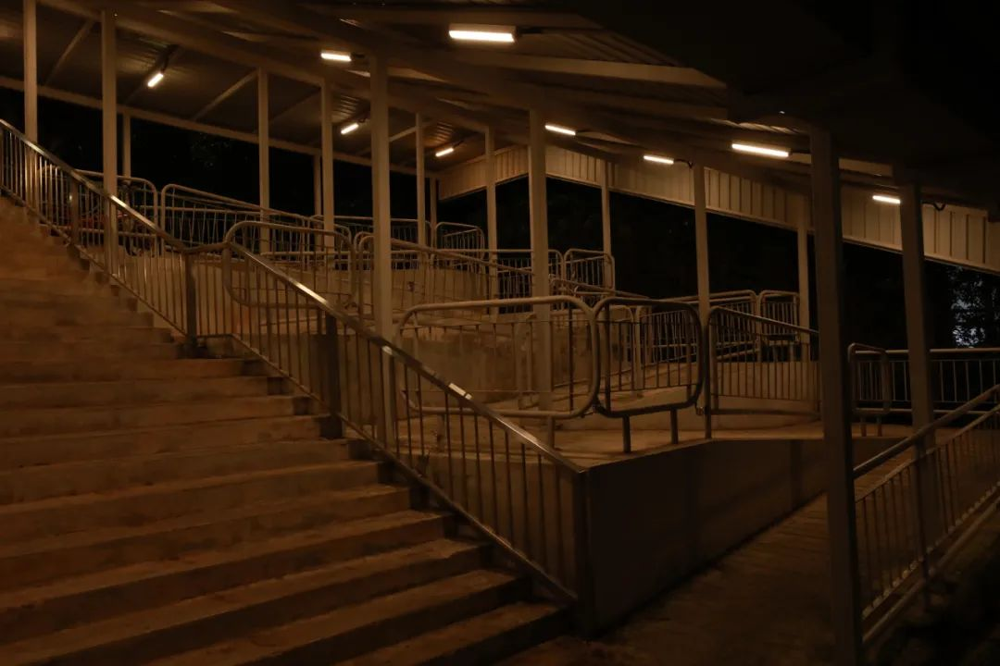

理想国在公众号上取标题：麻木不仁的日子里，记录即是抵抗。我一直不喜欢有横线格子的本子。我知道字要写多大。要么就直接做成手账本那种密密麻麻的格子，因为和没有一样。
前两天记者节。想起一个古老的句式：学不会xx，才去学xx。回到了全集和子集，我们要定义子集的时候，要么说哪些在里面，要么指明了全集之后说哪些不在里面。
喜不喜欢，爱不爱，合不合适，在不在一起，住不住一块，有没有名分，过不过得下去，是七件事；
你爱不爱学习，跟你学习好不好，跟你能不能考班上第一名，跟你能不能上一本线，跟你能不能上THU，能不能在THU顺利毕业，它还真就是不同的N件事儿。
看似相关的变量之间，独立性并不如想象地那么弱。我的意思是，独立性强，相互独立得很开。再往后算，能不能搞科研、科研搞不搞得出成果、要不要继续从事这个职业。觉得这个就是，没有那么高的产率。或者就是医生说：“你得的这个病只有5%的存活率。”重度抽卡玩家：“哇，这么高。”
罗翔说：“如果你觉得没有什么是绝对的对，也没有什么是绝对的错。你说的这句话，本身就是绝对的。”绝对的憨憨才一直拿着这种万金油卫道士，在没有前进的道路上端个脚盆过来洗脚，开心地偷笑：沧浪之水清兮，可以濯吾缨；沧浪之水浊兮，可以濯吾足。
《左传·成公十六年》：“日臣之使于楚也，子重问晋国之勇，臣对曰：‘好以众整。’曰：‘又何如？’臣对曰：‘好以暇。’”总结为，好整以暇。整：严整；暇：不急迫。形容既严整，又从容。也指事情虽多，仍旧从容不迫。
说说说，都是你们在说。我难道在做摘抄吗？难到要给我自己去开个水滴筹。虽然也没想好到底用来做什么。我比较同意是，先看到幸福，后看到花。所以拿着镜头出去，如果没有什么心情，如果只是很平淡的心情，那么拍出来的东西也是很平淡的。或者说根本就不会有意识要把镜头举起来。有意识的时候也不一定需要镜头。
老师打电话过来的时候，手边正好有一张不知道洪荒哪个年代遗留下来的一张票据。因为背面还可以写字，于是就在上面写字。电话打到后面就开始摸鱼，哇我写的字真好看，老师你慢点讲我练字练不过来了。
回消息了就是醒着而且在线，没回消息就是没在线、更严重一点就是没醒。不过我时不时会来回回消息，即算是回消息也不说明我等下就会醒着。人们从来不会管这么多，我给人发消息不回我就当是是那边暂停营业了。
